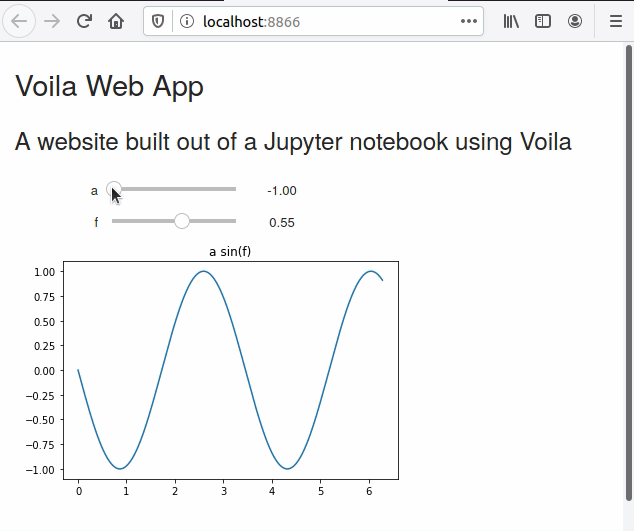

Jupyter notebooks are a great way to write and run Python code. Jupyter notebooks can produce text output, plots, and animations. Static Jupyter notebooks can be shared on GitHub.com and nbviewer. Another way to share Jupyter notebooks is a great Python package called Voila. Voila turns Jupyter notebooks into deployable web apps. In this post, you'll learn how to deploy a Jupyter notebook as a cloud-based web app with Voila and the cloud hosting service Heroku.
Prerequisites
This tutorial assumes you have Python installed on your local computer. I recommend installing the Anaconda distribution of Python Version 3.7, but you can also install Python from Python.org or the Windows Store. It is also assumed that you either have Windows Subsystem for Linux (WSL) installed or you are using MacOS or Linux itself. I recommend Ubuntu 18.04 LTS for your Linux distribution. You should also be able to bring up a terminal in your preferred operating system and be able to use some basic terminal commands such as cd to change directories, mkdir to make a new directory pwd to list the contents of a directory and cd .. to go back a directory.
Voila
What is Voila? Voila is a Python package that turns Jupyter notebooks into working web sites. It is pretty amazing. Another Python package called Streamlit turns .py-files into websites. Voila does the same that Streamlit does to .py-files, except for Jupyter notebooks.
Link to the Voila documentation: https://voila.readthedocs.io/en/stable/
Any Jupyter notebook can be turned into a website with Voila. Voila is specifically useful for turning Jupyter notebooks with embedded widgets into working websites.
Install Voila and Jupyter
Before we start writing any code, we need to install Voila and Jupyter. These packages can be installed using a terminal. In our example, we are also going to use NumPy and Matplotlib. The commands below show a virtual environment created with Python's built-in venv module. You could also create a virtual environment with conda if you are using the Anaconda distribution of Python. Note the command source venv/bin/activate will only work on MacOS, Linux, or WSL (Windows Subsystem for Linux). On Windows 10, use venv\Scripts\activate.bat instead.
mkdir voila
cd voila
python -m venv venv
source venv/bin/activate
pip install voila
pip install jupyter numpy matplotlib
Next, open a Jupyter notebook.
jupyter notebook
Create a Jupyter notebook with Widgets

Before we can deploy our Jupyter notebook as a cloud-based web app, we need to write a few cells in our Jupyter notebook. Any markdown cells in our Jupyter notebook will become text on our website. Any plots or widgets will also become part of the website. Code cells can be used on our website, but the code cells will not be seen by our website's visitors.
Save the new Jupyter notebook as app.ipynb. Jupyter notebooks can be re-named by clicking on the notebook name in the upper left-hand corner. Note that you do not include the .ipynb file extension when renaming a Jupyter notebook.
Our Jupyter notebook needs to start with a couple of import lines. Note that we don't need to import Volia into the notebook that will become the website. We just need to install Voila into the environment that will deploy the website.
At the top of the Jupyter notebook, enter some header text into a markdown cell.
# Voila Web App
## A website built out of a Jupyter notebook using Voila
Below the markdown cell in the notebook, enter the import lines below into a code cell. These lines of code import NumPy, Matplotlib and Jupyter notebook widgets.
import numpy as np
import matplotlib.pyplot as plt
from ipywidgets import interactive
%matplotlib inline
After the imports, enter the code below into a code cell. The code creates an interactive plot of the sine function using Jupyter notebook widgets, NumPy and Matplotlib.
def plot_func(a, f):
plt.figure(2)
x = np.linspace(0, 2*np.pi, num=1000)
y = a*np.sin(1/f*x)
plt.plot(x,y)
plt.ylim(-1.1, 1.1)
plt.title('a sin(f)')
plt.show()
interactive_plot = interactive(plot_func, a=(-1,0,0.1), f=(0.1, 1))
output = interactive_plot.children[-1]
output.layout.height = '300px'
interactive_plot
Run the code cell and play with the sliders and see the plot change. The sliders change the frequency and amplitude of the sine wave.
Test Voila locally
Next, we can test our website running on our local machine. Close the Jupyter notebook and make sure the environment where Voila was installed is activate. Type the command below into a terminal to run the app locally. Notice that we don't see the code in the code cells of our Jupyter notebook; we just see the markdown cells, sliders and plot.
voila app.ipynb

Great! The Voila app works locally and we can move the sliders and see the plot change, just like when we ran the code cell in the Jupyter notebook. So... next, we need to deploy this Voila app online so that other people can see it and interact with it too.
Deploy Voila App on Heroku
We are going to deploy our Voila web app on Heroku. Heroku is a service that hosts web apps and takes care of server administration for you. You can deploy Flask or Django webs apps on Heroku. We can also deploy our Voila app on Heroku. Luckily, Heroku has a free tier- you can try out deploying Voila online without having to pay any money.
A couple of steps need to be completed before we deploy our Voila app on Heroku.
Create Three Files
The first step to deploy our Voila app on Heroku is to create three files that Heroku requires. The three required files are:
requirements.txtruntime.txtProcfile
requirements.txt
Create the requirements.txt file with pip. The requirements.txt file tells Heroku which Python packages to install when it runs our web app.
pip freeze > requirements.txt
runtime.txt
The runtime.txt file specifies the version of Python we want Heroku to use. Create a new file called runtime.txt. Inside the file, just one line of text is needed. Note the lowercase python and the dash -.
python-3.7.6
Procfile
The last required file for our Heroku deployment is a Procfile. This file includes the instructions for Heroku to deploy our Voila app. Create a new file named Procfile (no extension) and include the text below:
web: voila --port=$PORT --no-browser app.ipynb
Next, we'll use the Heroku command-line interface (CLI) to deploy our app.
Install the Heroku CLI
The Heroku CLI (command line interface) is the way we are going to deploy our Voila web app online. I had the most success installing the Heroku CLI on Linux, MacOS or WSL (Windows Subsystem for Linux). I had trouble installing the Heroku CLI on regular Windows 10. A link to instructions on how to install the Heroku CLI is below:
After the Heroku CLI is installed, a couple more steps are needed before we can deploy our Voila app online.
Create a git Repo
I'm using Windows 10. And because we need to use WSL to use the Heroku CLI, we have to move the whole project into the proper WSL folder. You could move it over manually using the Windows file browser, but the way I did it was to save the project on GitHub.com and then pull the project down from GitHub.com in WSL using git.
Create repo on GitHub.com
Log into GitHub.com and create a new repo. I always add a readme, .gitignore, and a license.
Make sure to copy the GitHub URL from the repo to make the next step easier.
Add, commit and push local files to GitHub
Next, back on your local machine, move into the main project directory that contains the app.ipynb file. Use the commands below to create a local git repo and add the newly created GitHub.com repo as a remote. Make sure to change <username> and <reponame> corresponding to you and your project. Add all the files in the directory, commit and push up to Github.
git init
git remote add origin https://github.com/<usename>/<reponame>
git add .
git commit -m "initial commit"
git push origin master
Pull the Repo down into WSL
Now that the repo is up on GitHub.com, we can pull it down into WSL where the Heroku CLI is installed. Back in the Windows Subsystem for Linux terminal, type the following commands. Make sure to change <username> and <reponame> corresponding to you and your project.
mkdir voila
cd voila
git init
git remote add origin https://github.com/<username>/<reponame>
git pull origin master
After you pull the repo down from GitHub, the following files should be present.
.
├── LICENSE
├── .gitignore
├── Procfile
├── README.md
├── app.ipynb
├── requirements.txt
└── runtime.txt
Now we can push our project up to Heroku.
Push to Heroku
After our files are pushed to GitHub, we are almost done. All that's left is to push the files to Heroku and view our live web app. Use the heroku create command to create a new Heroku instance.hergit
heroku login
heroku create
The output will look something like below:
Creating app... done, ⬢ apple-crumble-25196
https://apple-crumble-25196.herokuapp.com/ | https://git.heroku.com/apple-crumble-25196.git
The last thing to do is to push the changes to Heroku to publish our app.
git push heroku master
The first time the command is run, it will take a little time for the web app to be deployed.
View the Web App Online
You can view the web app running with the following Heroku CLI command:
heroku open
A web browser window should pop up and you should be able to see your web app running!
When the slider is moved, you will be able to see the plot change. The web address in the address bar can be shared with colleagues and friends.
Summary
In this post, we created a website from a Jupyter notebook using Voila. First, we created a Jupyter notebook with an interactive widget. Then we ran Voila locally and saw a preview of what the app would look like online. Lastly, we published the app on Heroku using the Heroku CLI. Thanks to all the maintainers of Voila. It is a wonderful package.